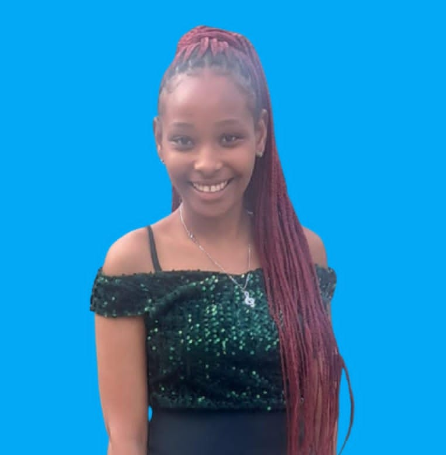
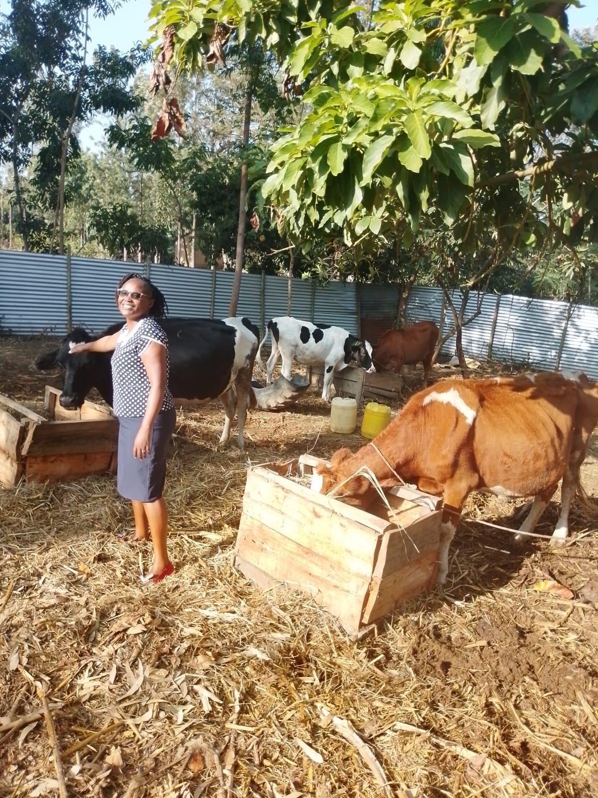
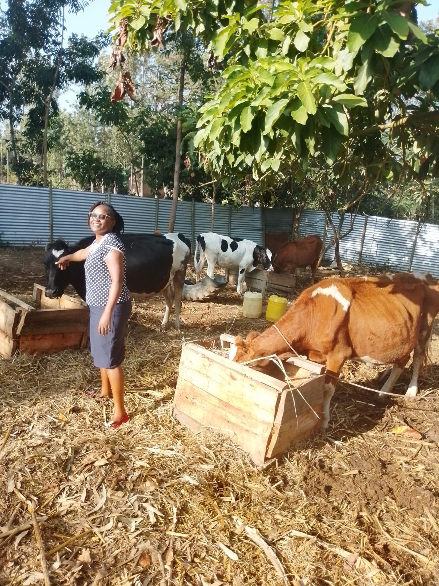
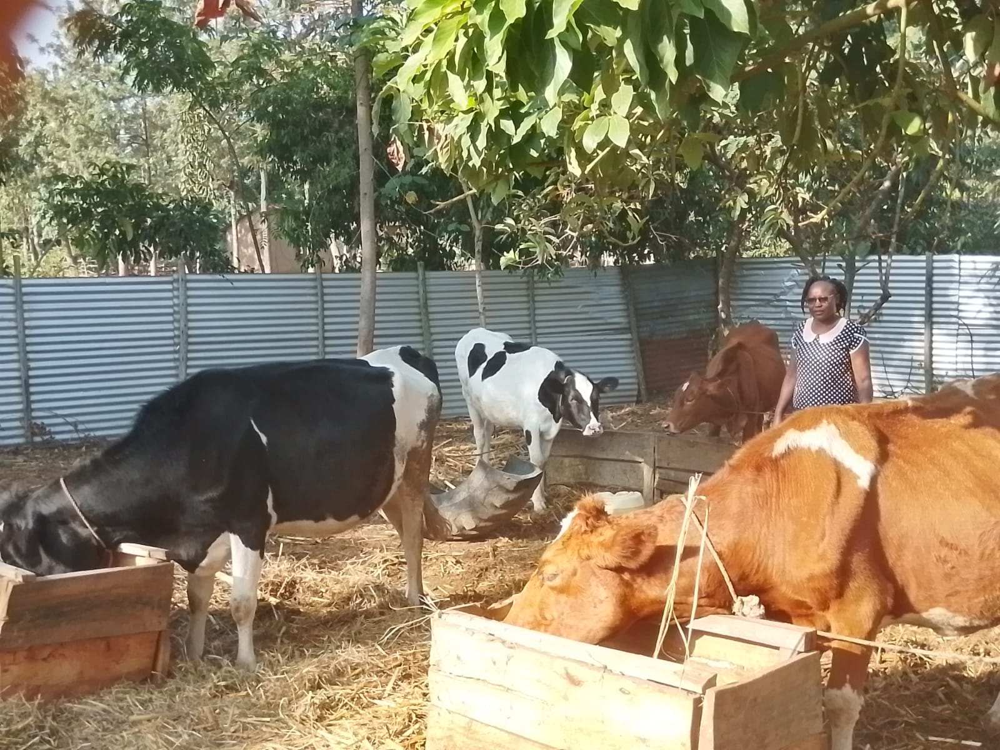
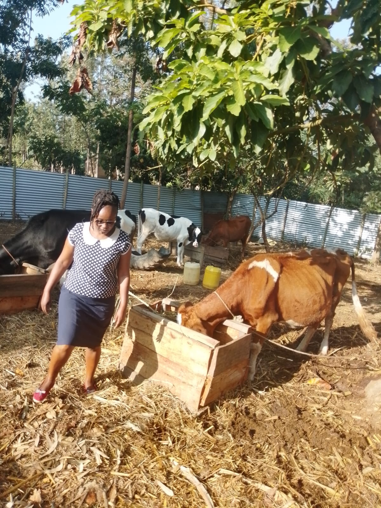

Livestock solutions and operations in Bungoma.
Rooted in Bungoma, Committed to Excellence.
Thery Sustainable Livestock Solutions is more than just a dairy provider; we are a registered agricultural partner dedicated to revolutionizing livestock management in Bungoma County. Our journey began with a simple mission: to bridge the gap between traditional farming and modern, sustainable productivity. By integrating climate-smart practices with deep local knowledge, we help farmers increase their yields while preserving the environment. At Thery, we believe that healthy livestock and a healthy planet go hand-in-hand.
We are dedicated to providing innovative and sustainable solutions for livestock management. Our mission is to help farmers and ranchers improve their operations while minimizing environmental impact.
Thery Sustainable Livestock Solutions is a registered business based in Bungoma County.
The company focuses on sustainable livestock management, as evidenced by their active farm operations involving dairy cattle.
Our team is composed of experienced professionals in the field of livestock management, veterinary science, and sustainable agriculture. We are passionate about helping our clients achieve their goals while promoting environmental stewardship.
Director: Catherine Chanya Malusha
Email: cmalusha81@gmail.com

Deputy Director: Maryann Chanya Wanyonyi
Email:chanyamaryann@gmail.com



